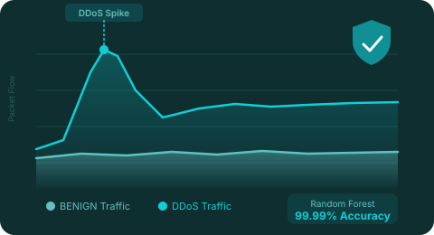
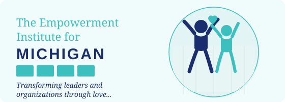

Projects

Cybersecurity Program · Seneca PolytechnicNetwork Traffic Classification
Completed as part of the Cybersecurity & Threat Management program at Seneca Polytechnic (CYT180, April 2026). Built a machine learning pipeline to detect DDoS attacks on 225,745 real network flows from the CICIDS2017 dataset. Compared Logistic Regression vs. Random Forest — Random Forest achieved 99.99% accuracy with zero false positives across 21,751 test samples.

Web DevelopmentThe Empowerment Institute for Michigan
Contributed to the design and development of the website for a leadership training and organizational development organization serving communities across Michigan. Built with WordPress and Elementor, featuring multi-page content, an integrated Online Campus, team directory, media hub, and e-brochures. Ongoing maintenance and technical support role.
Visit Site →Joy-at-Work Website
Designed and developed the website for Joy-at-Work Center, a global training and coaching organization helping teams and leaders find purpose and joy in the workplace.
Visit Site →What's next?
Let's Work Together
Open to co-op, internship & full-time opportunities. Whether it's cybersecurity, web development, or IT systems — I'd love to connect.
Say Hello →